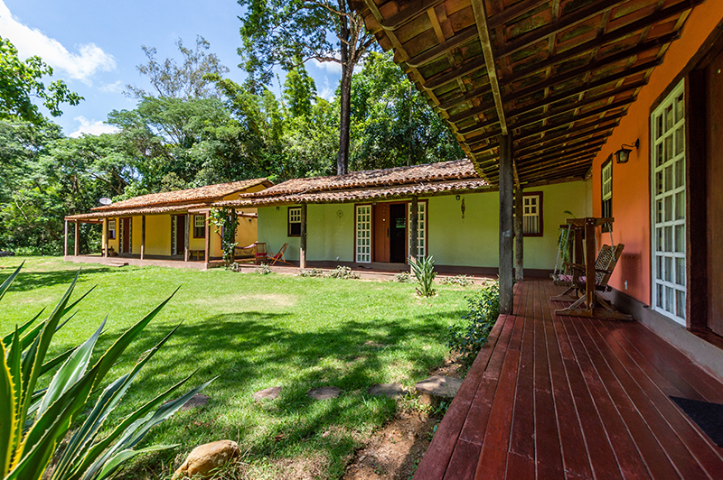

Historia Chalé Hotel
Paisagem tipicamente européia à margem da lagoa que deu origem à cidade, com suas lendas e mistérios. Amplo restaurante com vista para a lagoa e seu contorno. Recanto aprazível onde se respira a natureza, onde brota a essência da vida, onde reina a paz e impera a tranqüilidade. É um ambiente simples, singelo, aconchegante, martinense. Paisagem tipicamente européia à margem da lagoa que deu origem à cidade, com suas lendas e mistérios. Amplo restaurante com vista para a lagoa e seu contorno. Recanto aprazível onde se respira a natureza, onde brota a essência da vida, onde reina a paz e impera a tranqüilidade. É um ambiente simples, singelo, aconchegante, martinense.
Paisagem tipicamente européia à margem da lagoa que deu origem à cidade, com suas lendas e mistérios. Amplo restaurante com vista para a lagoa e seu contorno. Recanto aprazível onde se respira a natureza, onde brota a essência da vida, onde reina a paz e impera a tranqüilidade. É um ambiente simples, singelo, aconchegante, martinense. Paisagem tipicamente européia à margem da lagoa que deu origem à cidade, com suas lendas e mistérios. Amplo restaurante com vista para a lagoa e seu contorno. Recanto aprazível onde se respira a natureza, onde brota a essência da vida, onde reina a paz e impera a tranqüilidade. É um ambiente simples, singelo, aconchegante, martinense.